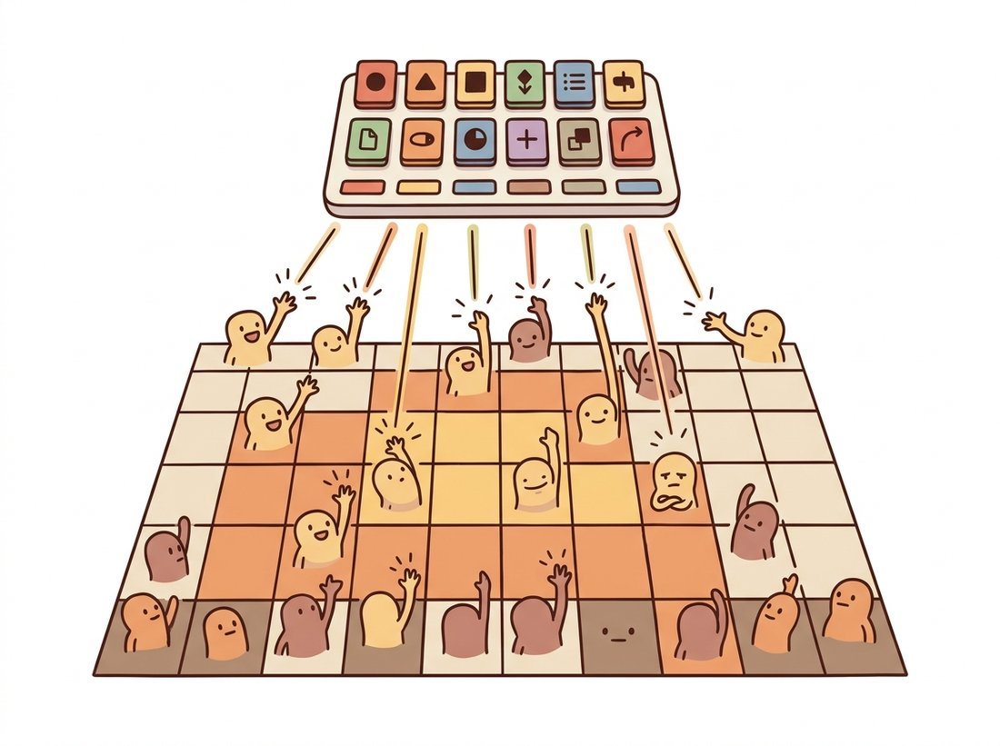

"I do not deal in shades of meaning. I have eight thousand words in my dictionary, and every patch of every image must choose one. It is a brutal vocabulary, but you would be amazed what you can say with it."
A Codebook With Strong Opinions About Vocabulary
Instead of a continuous code, the VQ-VAE snaps each piece of the encoder's output to the nearest entry in a learned dictionary, turning an image into a grid of discrete tokens drawn from a finite vocabulary. That single change has outsized consequences. A discrete token grid is exactly the kind of input a transformer or autoregressive model loves, so VQ-VAE turns image generation into the same problem as language modeling: predict the next token. The non-differentiable nearest-neighbor lookup is bridged by the straight-through estimator, which copies the gradient past the quantization as if it were the identity, and the codebook is trained with a small commitment loss. VQ-VAE-2 stacked codebooks for sharp high-resolution images, and VQGAN added a perceptual and adversarial loss to make the code crisp and compact. The grid of tokens you learn to produce here is the literal vocabulary that latent diffusion, autoregressive image models, and multimodal systems speak, the bridge from this chapter to the rest of Part IV.
Every latent in this chapter so far has been continuous: a real-valued vector, Gaussian-distributed, smooth. This section takes the opposite stance and makes the latent discrete. The motivation is partly that many things we model are inherently categorical (a phoneme, an object class, a word) and partly strategic: a discrete latent lets you put a powerful, expressive prior over the codes, a transformer or autoregressive model, and sample from it, which sidesteps the blur of a Gaussian decoder. The continuous VAE of Section 31.3 and the discrete VQ-VAE are the two great branches of the autoencoder family, and the discrete branch turned out to dominate the largest modern image generators.
1. Vector Quantization Intermediate
A VQ-VAE keeps the encoder and decoder but inserts a quantization step between them. The encoder, a convolutional network, maps an image to a grid of continuous vectors, one vector per spatial location, say a $32 \times 32$ grid of $D$-dimensional vectors for a $256 \times 256$ image. A learned codebook holds $K$ embedding vectors $e_1, \ldots, e_K$ (the dictionary, the vocabulary). Each encoder output vector $z_e(x)$ is replaced by its nearest codebook entry:
The decoder then reconstructs from the quantized grid $z_q$. The latent representation of the image is now just the grid of integer indices $k$, one per location, each pointing into the $K$-entry codebook. A $32 \times 32$ grid with a codebook of size $K = 8192$ describes the image with 1024 tokens, each a number from 0 to 8191, the image as a short paragraph in an 8192-word language. The illustration below dramatizes the moment where each patch of every image must choose one codebook entry, with no in-between option. Figure 31.6.1 shows the encode, quantize, decode pipeline and the token grid it produces.

2. The Straight-Through Estimator and the Losses Advanced
The $\arg\min$ that picks the nearest codebook entry is not differentiable: its gradient is zero almost everywhere, so backpropagation cannot pass through it to train the encoder. VQ-VAE bridges this with the straight-through estimator. On the forward pass it uses the quantized vector $z_q$; on the backward pass it pretends the quantization was the identity and copies the gradient from the decoder input straight back to the encoder output, as if $z_q = z_e$. In code this is the elegant trick z_q = z_e + (quantized - z_e).detach(): .detach() tells autograd to treat its argument as a constant with zero gradient, so the bracket contributes nothing on the backward pass. The forward value is therefore $z_e + (\text{quantized} - z_e) = \text{quantized}$, while the gradient sees only the bare $z_e$ and flows straight back into the encoder as if the quantization were not there.
That handles the encoder, but the codebook itself still needs a learning signal, and the encoder needs to be discouraged from producing outputs that drift far from any code. Two extra loss terms do this. The codebook loss $\lVert \text{sg}[z_e] - e \rVert^2$ pulls the chosen codebook entry toward the encoder output (sg is stop-gradient), and the commitment loss $\beta \lVert z_e - \text{sg}[e] \rVert^2$ pulls the encoder output toward its chosen code so the encoder "commits" to the codebook rather than oscillating. The two terms are the same distance written twice, with the stop-gradient placed on opposite sides on purpose. Each side moves only one of the two partners toward the other: the codebook loss updates the code while holding the encoder still, and the commitment loss updates the encoder while holding the code still. Splitting the distance this way lets you tune the two speeds independently through $\beta$.
The original VQ-VAE used $\beta = 0.25$, and the reason it is well below one is the mechanism just described: the codebook chases a moving target, since the encoder keeps shifting its outputs as it trains, so the codebook must be allowed to move toward the encoder faster than the encoder is pulled toward the codebook. A small $\beta$ keeps the encoder gently committed without letting it overrun the codebook's ability to keep up; push $\beta$ too high and the encoder locks onto stale codes that the codebook never catches, hurting reconstruction, which is why the value is robust enough that most implementations leave it at the default. The full objective is
Notice there is no KL term and no fixed prior during this stage. Unlike the continuous VAE, a VQ-VAE is trained purely as a reconstruction autoencoder with codebook upkeep; the generative prior over tokens is learned separately afterward (subsection 4). The next block implements the whole quantizer, including the straight-through estimator and both losses.
# The full vector quantizer: snap each encoder vector to its nearest
# codebook entry, compute the codebook and commitment losses, and apply the
# straight-through estimator so gradients reach the encoder past the argmin.
import torch
import torch.nn as nn
import torch.nn.functional as F
class VectorQuantizer(nn.Module):
def __init__(self, num_codes=512, dim=64, beta=0.25):
super().__init__()
self.codebook = nn.Embedding(num_codes, dim)
self.codebook.weight.data.uniform_(-1 / num_codes, 1 / num_codes)
self.beta = beta
def forward(self, z_e): # z_e: (B, dim, H, W)
B, D, H, W = z_e.shape
flat = z_e.permute(0, 2, 3, 1).reshape(-1, D) # (B*H*W, D)
# Nearest codebook entry by squared Euclidean distance.
dist = (flat.pow(2).sum(1, keepdim=True)
- 2 * flat @ self.codebook.weight.t()
+ self.codebook.weight.pow(2).sum(1))
idx = dist.argmin(1) # token indices
quantized = self.codebook(idx).view(B, H, W, D).permute(0, 3, 1, 2)
# Codebook loss (move codes to encoder) + commitment loss (move encoder to codes).
codebook_loss = F.mse_loss(quantized, z_e.detach())
commit_loss = F.mse_loss(z_e, quantized.detach())
loss = codebook_loss + self.beta * commit_loss
# Straight-through: forward uses `quantized`, gradient flows to z_e.
quantized = z_e + (quantized - z_e).detach()
return quantized, loss, idx.view(B, H, W)
vq = VectorQuantizer()
z_e = torch.randn(4, 64, 8, 8) # encoder output: 8x8 grid of 64-dim vecs
zq, vq_loss, tokens = vq(z_e)
print("token grid:", tokens.shape) # token grid: torch.Size([4, 8, 8])The reason discrete latents took over the largest image models is not better reconstruction; continuous VAEs reconstruct at least as well. It is that a grid of tokens is the same data type as text, so the entire machinery of autoregressive and masked transformers from the language world applies unchanged. Once an image is 1024 tokens from a vocabulary of 8192, "generate an image" becomes "generate a sequence of tokens," exactly the problem GPT-style and BERT-style models solve. This is the conceptual bridge that made text-to-image models like the autoregressive members of the Chapter 34 family possible, and it is why the VQ tokenizer sits at the input of so many multimodal systems. A continuous latent forces you to invent a new generative model for it; a discrete latent lets you borrow the most powerful sequence models that already exist.
The old saying promised a picture was worth a thousand words; the VQ-VAE took that as a build specification. A 32 by 32 grid with an 8192-entry codebook spells each image out in 1024 tokens, give or take, each token a "word" chosen from a brutal little dictionary that has no synonyms and no shades of meaning. It is the world's least poetic language, every patch forced to pick exactly one of eight thousand stock phrases, and yet a transformer reading these essays can be taught to write entirely new ones. The cliche turned out to be an architecture diagram.
Two numbers in this section are easy to confuse, and the confusion is damaging. The first is the spatial grid (say $32 \times 32$), the number of locations; the second is the codebook size $K$ (say 8192), the number of distinct vectors each location may choose from. Students often collapse them, picturing the $32 \times 32$ token grid as a $32 \times 32$ pixel image and concluding VQ-VAE just shrinks the picture, or imagining that raising $K$ raises the resolution. Neither holds. Each grid cell is a token summarizing a whole patch of the $256 \times 256$ input (here a $8 \times 8$ pixel region), not a single pixel, and the decoder upsamples the grid back to full resolution; the grid is a coarse spatial layout, not a thumbnail. The codebook size controls how many different things a patch can say (the richness of the vocabulary), not how many patches there are. Raising $K$ buys finer distinctions per location and risks the codebook collapse that Exercise 31.6.2 diagnoses; raising the grid size buys finer spatial detail and a longer token sequence for the prior to model. They are independent knobs.
3. The Training Math in Full Advanced
Subsection 2 stated the objective and the straight-through trick informally. Here we write the training mathematics out completely, in the notation of van den Oord, Vinyals, and Kavukcuoglu (2017), the paper that introduced the VQ-VAE, so that every gradient that flows during training is accounted for. The setup is the one already in play: the encoder produces $z_e(x)$ at each spatial location; the codebook is a set of $K$ vectors $\{e_k\}_{k=1}^{K}$; and quantization replaces $z_e(x)$ with its nearest entry,
To make the backward pass precise we introduce the stop-gradient operator $\text{sg}[\,\cdot\,]$. It is the identity on the forward pass, $\text{sg}[u] = u$, and has zero partial derivatives on the backward pass, $\nabla\,\text{sg}[u] = 0$; it is exactly PyTorch's .detach(). With it the full per-example loss is the sum of three terms,
Read the three terms by asking, for each one, which parameters can move because of it. The reconstruction term $\lVert x - \hat{x} \rVert_2^2$ trains the decoder directly, and trains the encoder through the straight-through estimator described next. The codebook term $\lVert \text{sg}[z_e(x)] - e \rVert_2^2$ has the stop-gradient on $z_e$, so only $e$ can move: it pulls the chosen code toward the encoder output, with the encoder held fixed. The commitment term $\lVert z_e(x) - \text{sg}[e] \rVert_2^2$ has the stop-gradient on $e$, so only $z_e$ can move: it pulls the encoder output toward its chosen code, with the code held fixed. The codebook and commitment terms are the same squared distance, $\lVert z_e(x) - e \rVert_2^2$, written twice with the stop-gradient on opposite arguments; that single device splits one distance into two one-directional pulls whose relative strength is set by $\beta$.
The straight-through estimator, exactly
The $\arg\min$ is piecewise constant, so $\partial z_q / \partial z_e = 0$ almost everywhere and the reconstruction gradient cannot reach the encoder through the quantizer. The straight-through estimator repairs this by defining the forward map $z_e \to z_q$ but declaring the backward map $\nabla_{z_q} \to \nabla_{z_e}$ to be the identity: whatever gradient the decoder sends to its input $z_q$ is copied unchanged to $z_e$, as though quantization were not in the path. Formally the decoder receives $z_q(x)$ on the forward pass, while during backpropagation we set
the approximation being the deliberate "lie" that $z_q = z_e$ for gradient purposes. This is exactly the identity z_q = z_e + (z_q - z_e).detach(): the forward value equals $z_q$, while the only term with a live gradient is the leading $z_e$, so $\nabla_{z_q}$ lands on $z_e$ unchanged. The commitment term is what keeps this approximation honest. By holding $z_e$ close to its chosen $e$, it keeps $z_q \approx z_e$, so copying the gradient across the gap introduces little error. The original paper sets $\beta = 0.25$ and reports the result is robust for $\beta$ anywhere in roughly $[0.1, 2.0]$, because $\beta$ only sets how hard the encoder commits, not what it represents; most implementations leave it at the default.
Inputs: image $x$; encoder $E$, decoder $D$; codebook $\{e_k\}_{k=1}^{K}$; commitment weight $\beta$.
Forward pass.
- Encode: $z_e \leftarrow E(x)$, a grid of $D$-dimensional vectors.
- Quantize each location: $k \leftarrow \arg\min_j \lVert z_e - e_j \rVert_2$, then $z_q \leftarrow e_k$.
- Straight-through wire: $\tilde{z}_q \leftarrow z_e + \text{sg}[\,z_q - z_e\,]$ (forward value is $z_q$).
- Decode: $\hat{x} \leftarrow D(\tilde{z}_q)$.
- Loss: $\mathcal{L} \leftarrow \lVert x - \hat{x} \rVert_2^2 + \lVert \text{sg}[z_e] - e_k \rVert_2^2 + \beta \lVert z_e - \text{sg}[e_k] \rVert_2^2$.
Backward pass.
- Reconstruction gradient reaches $\tilde{z}_q$; because of the straight-through wire it lands on $z_e$ unchanged (the $\text{sg}[\cdot]$ bracket contributes zero), then flows into $E$.
- Codebook term sends gradient only to $e_k$ (its $z_e$ is stopped).
- Commitment term sends gradient only to $z_e$, hence into $E$ (its $e_k$ is stopped).
- Update $E$, $D$, and the codebook by the optimizer; or, with the EMA variant, drop the codebook term and update $\{e_k\}$ by the moving averages of the EMA scheme below.
# The quantizer with the straight-through estimator and both loss terms,
# written to match the three-term objective term by term.
import torch
import torch.nn as nn
import torch.nn.functional as F
class STQuantizer(nn.Module):
def __init__(self, num_codes=512, dim=64, beta=0.25):
super().__init__()
self.codebook = nn.Embedding(num_codes, dim)
self.codebook.weight.data.uniform_(-1 / num_codes, 1 / num_codes)
self.beta = beta
def forward(self, z_e): # z_e: (B, dim, H, W)
B, D, H, W = z_e.shape
flat = z_e.permute(0, 2, 3, 1).reshape(-1, D)
dist = (flat.pow(2).sum(1, keepdim=True)
- 2 * flat @ self.codebook.weight.t()
+ self.codebook.weight.pow(2).sum(1))
idx = dist.argmin(1) # k = argmin_j ||z_e - e_j||
z_q = self.codebook(idx).view(B, H, W, D).permute(0, 3, 1, 2)
codebook_loss = F.mse_loss(z_q, z_e.detach()) # ||sg[z_e] - e||^2
commit_loss = F.mse_loss(z_e, z_q.detach()) # ||z_e - sg[e]||^2
loss = codebook_loss + self.beta * commit_loss
z_q = z_e + (z_q - z_e).detach() # straight-through estimator
return z_q, loss, idx.view(B, H, W)codebook_loss implements $\lVert \text{sg}[z_e] - e \rVert^2$ via z_e.detach(), commit_loss implements $\lVert z_e - \text{sg}[e] \rVert^2$ via z_q.detach(), and the final line is the straight-through wire that routes the reconstruction gradient past the non-differentiable argmin into the encoder.The EMA codebook update
The appendix of the original paper offers an alternative to the codebook loss term that often trains more stably. Instead of moving each code toward the encoder outputs by gradient descent on $\lVert \text{sg}[z_e] - e \rVert^2$, set each code to the running average of the encoder vectors assigned to it. Maintain, per code $k$, a count $N_k$ and an accumulated sum $m_k$, updated each batch with an exponential moving average of decay $\gamma$,
where $n_k$ is the number of encoder vectors assigned to code $k$ in the current batch and the sum runs over exactly those vectors. The code $e_k$ is then the count-normalized running mean of everything that has ever quantized to it, decayed so that recent batches matter more; the paper uses $\gamma \approx 0.99$. This is just an online k-means update on the codebook, which is why it tends to be smoother than the gradient version: it replaces the codebook loss term entirely. The commitment term stays exactly as before, still trained by gradient, because the encoder still needs to be pulled toward its codes; only the codebook's own learning signal changes. Production libraries default to this EMA scheme together with dead-code reinitialization, which is the combination that most reliably avoids codebook collapse.
The discrete latents trained here are not the end of the story; they are an alphabet that the rest of Part IV writes in. The same VQ tokenizer becomes the front end of latent diffusion (Chapter 33), the vocabulary of autoregressive image models, and the discrete world-state codes of world models (Chapter 36). In every case the recipe is the two-stage one of subsection 4: freeze this tokenizer, then train a powerful sequence or diffusion model over its token grids. The straight-through estimator and commitment loss derived above are the conceptual core that all of those downstream systems inherit.
4. Learning a Prior Over Tokens Advanced
A trained VQ-VAE is only an autoencoder; it cannot generate yet, because nothing tells you which token grids are plausible. The second stage fixes this by training a generative model over the token grids the encoder produces on the training set. Originally this was a PixelCNN-style autoregressive model predicting each token from those above and to the left; modern systems use a transformer, predicting tokens in raster order (autoregressive) or filling masked tokens (masked, BERT-style). To sample a new image you generate a fresh token grid from this prior, look up each token in the codebook to get the quantized grid, and decode. The two-stage structure, learn a tokenizer, then learn a prior over tokens, is the template for an enormous family of generative models. The next block shows the sampling procedure.
# Two-stage sampling: a transformer prior over token indices does the
# generating, then the VQ-VAE codebook and decoder render the grid to pixels.
# Stage 1 (a trained VQ-VAE) and Stage 2 (the `prior`) are trained separately.
import torch
@torch.no_grad()
def sample_image(prior, vqvae, grid_hw=(8, 8), start_token=0):
H, W = grid_hw
tokens = torch.full((1, H * W), start_token, dtype=torch.long)
for i in range(H * W): # autoregressive token generation
logits = prior(tokens)[:, i] # predict token i
tokens[:, i] = torch.distributions.Categorical(logits=logits).sample()
tokens = tokens.view(1, H, W)
quantized = vqvae.quantizer.codebook(tokens).permute(0, 3, 1, 2) # indices -> vecs
return vqvae.decoder(quantized) # decode the token grid to an image
# The transformer prior does the generating; the VQ-VAE decoder only renders.
# This is the same recipe behind token-based text-to-image models.sample_image function lets a transformer prior generate the token grid one index at a time, then looks each index up in the codebook and decodes the quantized grid into an image. The tokenizer and the prior are trained separately, the template for autoregressive image generation.5. VQ-VAE-2, VQGAN, and the Road to Diffusion Intermediate
Two refinements turned the VQ-VAE from a clever idea into production infrastructure. VQ-VAE-2 (2019) stacked the codebooks into a hierarchy, a top codebook for global structure and a bottom codebook for detail, the discrete cousin of the hierarchical VAE in Section 31.5, and paired it with a powerful autoregressive prior to produce sharp, large, diverse images, proving discrete latents scale. VQGAN (2021) made the autoencoder itself much better by adding a perceptual loss and an adversarial discriminator (the GAN idea of Chapter 32, used here only to sharpen the decoder) so that a small token grid could be decoded into a crisp high-resolution image. That compact, crisp tokenizer is exactly what made transformer-based image generation efficient, since the transformer only has to model a short sequence.
The line from here to the rest of Part IV is direct. VQGAN's autoencoder is the ancestor of the autoencoder that latent diffusion runs inside, and the continuous-latent AutoencoderKL of Section 31.3 and the discrete VQGAN tokenizer are the two options every latent-space generator chooses between. Latent diffusion (Chapter 33) mostly took the continuous route; autoregressive and masked-token image models took the discrete route. Both run their heavy generative model in the compressed latent space that an autoencoder from this chapter provides, which is the single most important practical lesson of Chapter 31: the autoencoder is the compression layer that makes large-scale generation affordable.
The quantizer above is about thirty lines and has subtle correctness traps (the distance computation, the straight-through detach, codebook collapse where most entries go unused). The vector-quantize-pytorch library packages a battle-tested VectorQuantize module plus modern variants, residual VQ, finite scalar quantization (FSQ), and lookup-free quantization, behind a one-line call (VectorQuantize(dim=64, codebook_size=512)), and it handles codebook reinitialization and exponential-moving-average updates that prevent the dead-code problem internally. For the diffusion-grade autoencoder, Hugging Face Diffusers ships VQModel with pretrained weights. Write the from-scratch quantizer once to understand the straight-through estimator; reach for the library the moment you train anything real, because the codebook-utilization tricks it implements are exactly the part that is easy to get wrong.
Who: an engineer at an online retailer building a system that lets shoppers search the catalog with images and text in one model, 2024. Situation: they wanted a single transformer to handle both modalities, but images are continuous and text is discrete, so the two did not fit one model. Problem: bolting a separate image encoder onto a text transformer made the system complex and hard to train jointly. Decision: they ran every product image through a pretrained VQGAN tokenizer, turning each image into a short grid of discrete tokens, and then treated image tokens and text tokens as one shared vocabulary fed to a single transformer. Result: one model consumed both modalities natively, image-token sequences sitting alongside word tokens, which simplified training and let the model learn cross-modal associations directly. Lesson: discretizing images with a VQ tokenizer is the standard move for unifying vision and language in a single sequence model; the moment your images become tokens, every tool built for text sequences becomes available, which is precisely why discrete latents anchor so many multimodal systems.
In 2024 to 2026 the image tokenizer is one of the most actively optimized components of the generative stack, because its compression ratio and reconstruction quality cap what every downstream model can achieve. Finite scalar quantization (FSQ; Mentzer et al., ICLR 2024, arXiv:2309.15505) and lookup-free quantization (introduced with MAGVIT-v2; Yu et al., "Language Model Beats Diffusion: Tokenizer is Key to Visual Generation," ICLR 2024, arXiv:2310.05737) replace the learned codebook with a fixed quantization grid, which largely sidesteps the codebook-collapse problem and simplifies training while reportedly matching VQ reconstruction quality. MAGVIT-v2-style tokenizers brought very large codebooks and strong video tokenization, and several 2024 to 2025 systems push toward "one tokenizer for image and video" so a single model can generate both. There is also active debate over continuous versus discrete latents for the largest models, with diffusion favoring continuous and autoregressive models favoring discrete, and hybrid designs blurring the line. The straight-through estimator and commitment loss you implemented here remain the conceptual core of the discrete branch, and the codebook you trained is the direct ancestor of the tokenizers feeding the frontier multimodal models of Chapter 34 and Chapter 36.
The straight-through estimator pretends the quantization is the identity on the backward pass even though it is not on the forward pass. Explain in three or four sentences why this biased gradient still trains the encoder usefully, and what role the commitment loss plays in making the lie harmless (hint: think about keeping the encoder output close to its chosen code so the "identity" approximation stays accurate). Then explain why a VQ-VAE needs the separate codebook loss in addition, and what would go wrong if you trained the codebook entries with the straight-through gradient alone.
Assemble a convolutional VQ-VAE for MNIST or CIFAR-10 using the VectorQuantizer of subsection 2: a convolutional encoder down to an $8 \times 8$ grid, the quantizer with a 256-entry codebook, and a transposed-convolution decoder. Train it and reconstruct test images. Then diagnose codebook collapse: count how many of the 256 codebook entries are actually used across the test set, and plot a histogram of usage. If many entries are dead (never selected), describe one fix (codebook reinitialization or an EMA update) and explain why dead codes waste capacity, connecting to the library-shortcut note about why production quantizers implement these fixes.
Write a one-page comparison of the continuous VAE latent of Section 31.3 against the discrete VQ-VAE latent of this section, organized around four axes: (1) how you generate (sample a Gaussian and decode, versus learn and sample a prior over tokens), (2) interpolation behavior (smooth versus discrete jumps), (3) what generative model the latent invites (custom continuous model versus borrowed sequence transformer), and (4) the failure modes (posterior collapse versus codebook collapse). Conclude with a recommendation: for a system that wants to reuse a powerful pretrained sequence model and one that wants smooth latent-space editing, which latent would you choose and why? Connect your answer to the continuous-versus-discrete choice that Chapter 33's latent diffusion faces.
The two squared-distance terms in the VQ-VAE loss are the same distance $\lVert z_e(x) - e \rVert^2$ with the stop-gradient on opposite arguments. Explain, in four or five sentences, why training needs both rather than either alone. Specifically: (a) suppose you keep only the codebook term $\lVert \text{sg}[z_e] - e \rVert^2$; describe what the encoder is now free to do and why that makes the straight-through gradient unreliable. (b) Suppose instead you keep only the commitment term $\beta \lVert z_e - \text{sg}[e] \rVert^2$; describe what happens to the codebook entries and why reconstruction suffers. Conclude by stating, in terms of which partner each term moves, why splitting one distance into two one-directional pulls (codebook moves $e$ toward $z_e$; commitment moves $z_e$ toward $e$) is exactly what lets the encoder and codebook converge to a consistent quantization.
Starting from the STQuantizer of subsection 3, build an EMA variant. Register non-trainable buffers cluster_size ($N_k$) and ema_w ($m_k$) of the codebook shape, and on each forward pass (under torch.no_grad()) update them with decay $\gamma = 0.99$ using $N_k \leftarrow \gamma N_k + (1-\gamma)\,n_k$ and $m_k \leftarrow \gamma m_k + (1-\gamma)\sum_{i:\,z_e(x_i)\to k} z_e(x_i)$, then set $e_k = m_k / N_k$ (add a small epsilon to $N_k$ to avoid division by zero). Drop the codebook loss term from the objective but keep the commitment term trained by gradient. Train this EMA version and the loss-based version of Exercise 31.6.2 on the same dataset with the same seed, and compare on three axes: final reconstruction error, codebook utilization (how many of the entries stay alive), and training stability across the first few epochs. State which variant collapses less and explain why the running-mean update is effectively an online k-means step on the codebook.
The chapter has now built three latents from the same skeleton: the plain code of Section 31.1, the samplable Gaussian code of Section 31.3, and the discrete codebook of this section. The Hands-On Lab below pulls all three into one runnable experiment so you can see, in a single figure, exactly how the constraint decides what the code becomes.
Objective. Train three autoencoders that share one convolutional encoder-decoder backbone but differ only in the constraint on the bottleneck (none, a Gaussian prior, a discrete codebook), then produce one shareable figure that proves the chapter's thesis: a plain autoencoder reconstructs but cannot be sampled, the VAE makes the latent space dense and samplable, and the VQ-VAE turns the image into a grid of tokens. The artifact ties together Sections 31.1, 31.3, and 31.6 on a single dataset with a single training harness.
What You'll Practice
- Building one convolutional encoder-decoder backbone and reusing it under three different bottleneck constraints (Sections 31.1, 31.3, 31.6).
- Implementing the VAE reparameterization trick and the analytic Gaussian KL term, and the VQ straight-through estimator with its commitment loss.
- Demonstrating the plain autoencoder's fatal flaw: decoding a random latent draw yields garbage (Section 31.1).
- Sampling the VAE prior and interpolating between two encodings to show a smooth, dense latent space (Section 31.3).
- Measuring codebook utilization for the VQ-VAE and diagnosing codebook collapse (Section 31.6).
Setup
Runs in Colab or any machine with PyTorch. MNIST is tiny, so all three models train in a few minutes each on a GPU and still finish on CPU if you cut the epoch count. No downloads beyond the dataset.
pip install torch torchvision matplotlibSteps
Step 1: Build the shared backbone
Write one convolutional encoder that maps a 28x28 MNIST digit down to a small spatial grid, and one transposed-convolution decoder that maps back up. All three models reuse these so that any difference in results comes from the bottleneck constraint alone, not from a different network.
import torch, torch.nn as nn, torch.nn.functional as F
device = "cuda" if torch.cuda.is_available() else "cpu"
class Encoder(nn.Module):
"""28x28x1 -> (C, 7, 7) feature grid."""
def __init__(self, ch=32):
super().__init__()
self.net = nn.Sequential(
nn.Conv2d(1, ch, 4, stride=2, padding=1), nn.ReLU(), # 28 -> 14
nn.Conv2d(ch, ch, 4, stride=2, padding=1), nn.ReLU()) # 14 -> 7
def forward(self, x):
return self.net(x)
class Decoder(nn.Module):
"""(C, 7, 7) -> 28x28x1 image in [0, 1]."""
def __init__(self, ch=32):
super().__init__()
self.net = nn.Sequential(
nn.ConvTranspose2d(ch, ch, 4, stride=2, padding=1), nn.ReLU(), # 7 -> 14
nn.ConvTranspose2d(ch, 1, 4, stride=2, padding=1)) # 14 -> 28
def forward(self, z):
return torch.sigmoid(self.net(z))
# TODO: load MNIST as tensors in [0, 1] and build a DataLoader with batch_size=128.
# Hint: torchvision.datasets.MNIST with transform=torchvision.transforms.ToTensor().
train_loader = ...
Hint
ds = torchvision.datasets.MNIST("./data", train=True, download=True, transform=torchvision.transforms.ToTensor()) then train_loader = torch.utils.data.DataLoader(ds, batch_size=128, shuffle=True). ToTensor already scales pixels to [0, 1], which matches the sigmoid decoder output.
Step 2: Model 1, the plain autoencoder
The simplest constraint is just the bottleneck width. Flatten the encoder grid to a small vector, then expand it back. Train it to minimize reconstruction error. This is the model of Section 31.1.
class PlainAE(nn.Module):
def __init__(self, ch=32, zdim=16):
super().__init__()
self.enc, self.dec = Encoder(ch), Decoder(ch)
self.to_z = nn.Linear(ch * 7 * 7, zdim)
self.from_z = nn.Linear(zdim, ch * 7 * 7)
self.ch = ch
def forward(self, x):
h = self.enc(x).flatten(1)
z = self.to_z(h) # the code (no constraint on its shape)
# TODO: map z back through self.from_z, reshape to (B, ch, 7, 7), decode.
recon = ...
return recon, z
# Hint: loss is F.binary_cross_entropy(recon, x). Train ~10 epochs with Adam(lr=1e-3).
Hint
g = self.from_z(z).view(-1, self.ch, 7, 7); recon = self.dec(g). Keep this training loop in a small reusable train(model, loss_fn) helper; you will call it three times.
Step 3: Model 2, the VAE
Add the one constraint that makes the code samplable: have the encoder output a mean and log-variance, sample with the reparameterization trick, and add the analytic Gaussian KL term that pulls the posterior toward the standard-normal prior. This is the model of Section 31.3.
class VAE(nn.Module):
def __init__(self, ch=32, zdim=16):
super().__init__()
self.enc, self.dec = Encoder(ch), Decoder(ch)
self.to_mu = nn.Linear(ch * 7 * 7, zdim)
self.to_logvar = nn.Linear(ch * 7 * 7, zdim)
self.from_z = nn.Linear(zdim, ch * 7 * 7)
self.ch = ch
def forward(self, x):
h = self.enc(x).flatten(1)
mu, logvar = self.to_mu(h), self.to_logvar(h)
# TODO: reparameterize: std = exp(0.5*logvar); z = mu + std * randn_like(std).
z = ...
g = self.from_z(z).view(-1, self.ch, 7, 7)
return self.dec(g), mu, logvar
def vae_loss(recon, x, mu, logvar):
bce = F.binary_cross_entropy(recon, x, reduction="sum") / x.size(0)
# TODO: the closed-form KL of a diagonal Gaussian to N(0, I).
kl = ...
return bce + kl
Hint
Reparameterize with z = mu + torch.exp(0.5 * logvar) * torch.randn_like(mu). The KL is kl = -0.5 * torch.sum(1 + logvar - mu.pow(2) - logvar.exp()) / x.size(0). Dividing both terms by batch size keeps their scale comparable.
Step 4: Model 3, the VQ-VAE
Replace the continuous code with a learned codebook. Snap each spatial location of the encoder grid to its nearest codebook vector, pass the gradient straight through, and add the commitment loss. This is the quantizer of subsection 2 of this section, applied to the same backbone.
class VectorQuantizer(nn.Module):
def __init__(self, n_codes=64, dim=32, beta=0.25):
super().__init__()
self.codebook = nn.Embedding(n_codes, dim)
self.codebook.weight.data.uniform_(-1/n_codes, 1/n_codes)
self.beta = beta
def forward(self, z): # z: (B, dim, H, W)
B, C, H, W = z.shape
flat = z.permute(0, 2, 3, 1).reshape(-1, C) # (B*H*W, dim)
d = (flat.pow(2).sum(1, keepdim=True)
- 2 * flat @ self.codebook.weight.t()
+ self.codebook.weight.pow(2).sum(1))
idx = d.argmin(1) # nearest code per location
zq = self.codebook(idx).view(B, H, W, C).permute(0, 3, 1, 2)
# TODO: commitment + codebook loss, then straight-through: zq = z + (zq - z).detach()
loss = ...
zq_st = ...
return zq_st, loss, idx
Hint
loss = F.mse_loss(zq.detach(), z) * self.beta + F.mse_loss(zq, z.detach()) (commitment plus codebook term), then zq_st = z + (zq - z).detach() so the forward value is the quantized code but the gradient flows to the encoder. The VQ-VAE decodes zq_st directly (no Linear bottleneck) and adds loss to the reconstruction BCE.
Step 5: Show the plain AE cannot be sampled
Here is the chapter's pivot made visible. Encode the test set with the plain AE to find the typical range of its codes, then decode a batch of random codes drawn from that range. Because nothing forced the code space to be filled smoothly, the outputs are smeary nonsense, not digits.
ae.eval()
with torch.no_grad():
# TODO: collect z = ae.to_z(ae.enc(x).flatten(1)) over the test set,
# then sample z_rand ~ Normal(z.mean(0), z.std(0)) and decode it.
z_rand = ...
fake = ae.dec(ae.from_z(z_rand).view(-1, ae.ch, 7, 7))
# Display `fake`: expect blurry, non-digit blobs.
Hint
Even sampling from the empirical mean and std of real codes fails, because the codes occupy a thin, hole-filled manifold inside that box. That gap is exactly what the VAE's KL term closes.
Step 6: Sample and interpolate the VAE
Now repeat the sampling for the VAE, but draw straight from the prior, no statistics needed, because training guaranteed the prior is the right distribution. Then interpolate linearly between the encodings of two test digits and decode each step to show the latent space morphs smoothly.
vae.eval()
with torch.no_grad():
z = torch.randn(64, 16, device=device) # straight from N(0, I)
samples = vae.dec(vae.from_z(z).view(-1, vae.ch, 7, 7))
# TODO: encode two test images to their means mu_a, mu_b, then decode
# mu_a*(1-t) + mu_b*t for t in linspace(0, 1, 8).
interp = ...
# Display `samples` (plausible digits) and `interp` (a smooth morph a -> b).
Hint
For interpolation use the posterior means (not a fresh sample) for a clean path: mu_a = vae.to_mu(vae.enc(xa).flatten(1)), likewise mu_b, then stack vae.dec(...) for each t. The intermediate digits should look like valid handwriting, not double exposures.
Step 7: Measure VQ-VAE codebook usage and compose the figure
Run the test set through the VQ-VAE, count how many of the 64 codebook entries are ever selected, and reconstruct a few digits. Then lay everything out in one figure: a reconstruction row per model, the AE's failed random samples, the VAE's prior samples and interpolation, and the VQ codebook-usage histogram.
import matplotlib.pyplot as plt
# TODO: accumulate all `idx` from the VQ-VAE over the test set, then
# used = torch.unique(all_idx).numel(); print(f"{used}/64 codes used").
# Build a figure with: AE/VAE/VQ reconstructions, AE random (Step 5),
# VAE samples + interpolation (Step 6), and a bar plot of code usage.
# Save with plt.savefig("latent_showdown.png", dpi=150, bbox_inches="tight").
Hint
Bincount the indices with torch.bincount(all_idx, minlength=64) for the histogram; a healthy run uses most of the 64 codes. If only a handful are used you have reproduced codebook collapse from Exercise 31.6.2, and the library-shortcut note explains the EMA and reinit fixes.
Expected Output
A single saved PNG, latent_showdown.png. All three models should reconstruct test digits recognizably. The plain autoencoder's random-code panel (Step 5) should show blurry, non-digit blobs, the visible proof of its hole-filled latent space. The VAE's prior-sample panel should show plausible (slightly soft) digits, and its interpolation row should morph smoothly from one digit to another with valid handwriting at every step. The VQ-VAE usage histogram should show most of the 64 codebook entries in active use; a near-empty histogram signals codebook collapse. Reconstruction BCE for all three typically settles to a similar low value within about ten epochs, which is the point: similar reconstruction, radically different generative behavior, decided entirely by the bottleneck constraint.
Stretch Goals
- Sweep the VAE beta. Retrain the VAE with the KL term scaled by beta in {0.5, 1, 4} as in Section 31.4, and compare interpolation smoothness against reconstruction sharpness. You should see the disentanglement-versus-fidelity trade-off directly.
- Library shortcut (the "Right Tool"). Swap your hand-written quantizer for
vector-quantize-pytorch:from vector_quantize_pytorch import VectorQuantize; vq = VectorQuantize(dim=32, codebook_size=64), which returns the quantized tensor, indices, and commitment loss in one call and handles the EMA codebook updates that prevent the collapse you may have hit in Step 7. - Connect forward to diffusion. Treat the VAE encoder as a fixed compressor and report the spatial compression ratio of its latent grid versus the pixel image; this is exactly the role the autoencoder plays in the latent diffusion of Chapter 33.
Complete Solution
import torch, torch.nn as nn, torch.nn.functional as F
import torchvision, torchvision.transforms as T
import matplotlib.pyplot as plt
device = "cuda" if torch.cuda.is_available() else "cpu"
torch.manual_seed(0)
# ---- Step 1: data and shared backbone ----
ds = torchvision.datasets.MNIST("./data", train=True, download=True, transform=T.ToTensor())
ts = torchvision.datasets.MNIST("./data", train=False, download=True, transform=T.ToTensor())
train_loader = torch.utils.data.DataLoader(ds, batch_size=128, shuffle=True)
test_loader = torch.utils.data.DataLoader(ts, batch_size=256, shuffle=False)
class Encoder(nn.Module):
def __init__(self, ch=32):
super().__init__()
self.net = nn.Sequential(
nn.Conv2d(1, ch, 4, stride=2, padding=1), nn.ReLU(),
nn.Conv2d(ch, ch, 4, stride=2, padding=1), nn.ReLU())
def forward(self, x): return self.net(x)
class Decoder(nn.Module):
def __init__(self, ch=32):
super().__init__()
self.net = nn.Sequential(
nn.ConvTranspose2d(ch, ch, 4, stride=2, padding=1), nn.ReLU(),
nn.ConvTranspose2d(ch, 1, 4, stride=2, padding=1))
def forward(self, z): return torch.sigmoid(self.net(z))
def train(model, loss_fn, epochs=10, lr=1e-3):
opt = torch.optim.Adam(model.parameters(), lr=lr)
model.train()
for ep in range(epochs):
for x, _ in train_loader:
x = x.to(device)
opt.zero_grad()
loss = loss_fn(model, x)
loss.backward(); opt.step()
return model
# ---- Step 2: plain autoencoder ----
class PlainAE(nn.Module):
def __init__(self, ch=32, zdim=16):
super().__init__()
self.enc, self.dec = Encoder(ch), Decoder(ch)
self.to_z, self.from_z = nn.Linear(ch*7*7, zdim), nn.Linear(zdim, ch*7*7)
self.ch = ch
def forward(self, x):
z = self.to_z(self.enc(x).flatten(1))
recon = self.dec(self.from_z(z).view(-1, self.ch, 7, 7))
return recon, z
ae = PlainAE().to(device)
train(ae, lambda m, x: F.binary_cross_entropy(m(x)[0], x))
# ---- Step 3: VAE ----
class VAE(nn.Module):
def __init__(self, ch=32, zdim=16):
super().__init__()
self.enc, self.dec = Encoder(ch), Decoder(ch)
self.to_mu, self.to_logvar = nn.Linear(ch*7*7, zdim), nn.Linear(ch*7*7, zdim)
self.from_z = nn.Linear(zdim, ch*7*7); self.ch = ch
def forward(self, x):
h = self.enc(x).flatten(1)
mu, logvar = self.to_mu(h), self.to_logvar(h)
z = mu + torch.exp(0.5 * logvar) * torch.randn_like(mu) # reparameterize
return self.dec(self.from_z(z).view(-1, self.ch, 7, 7)), mu, logvar
def vae_step(m, x):
recon, mu, logvar = m(x)
bce = F.binary_cross_entropy(recon, x, reduction="sum") / x.size(0)
kl = -0.5 * torch.sum(1 + logvar - mu.pow(2) - logvar.exp()) / x.size(0)
return bce + kl
vae = VAE().to(device)
train(vae, vae_step)
# ---- Step 4: VQ-VAE ----
class VectorQuantizer(nn.Module):
def __init__(self, n_codes=64, dim=32, beta=0.25):
super().__init__()
self.codebook = nn.Embedding(n_codes, dim)
self.codebook.weight.data.uniform_(-1/n_codes, 1/n_codes)
self.beta = beta
def forward(self, z):
B, C, H, W = z.shape
flat = z.permute(0, 2, 3, 1).reshape(-1, C)
d = (flat.pow(2).sum(1, keepdim=True)
- 2 * flat @ self.codebook.weight.t()
+ self.codebook.weight.pow(2).sum(1))
idx = d.argmin(1)
zq = self.codebook(idx).view(B, H, W, C).permute(0, 3, 1, 2)
loss = F.mse_loss(zq.detach(), z) * self.beta + F.mse_loss(zq, z.detach())
zq_st = z + (zq - z).detach() # straight-through
return zq_st, loss, idx
class VQVAE(nn.Module):
def __init__(self, ch=32, n_codes=64):
super().__init__()
self.enc, self.dec = Encoder(ch), Decoder(ch)
self.vq = VectorQuantizer(n_codes, ch)
def forward(self, x):
zq, vq_loss, idx = self.vq(self.enc(x))
return self.dec(zq), vq_loss, idx
def vq_step(m, x):
recon, vq_loss, _ = m(x)
return F.binary_cross_entropy(recon, x) + vq_loss
vq = VQVAE().to(device)
train(vq, vq_step)
# ---- Step 5: the plain AE cannot be sampled ----
ae.eval(); xb, _ = next(iter(test_loader)); xb = xb.to(device)
with torch.no_grad():
codes = torch.cat([ae.to_z(ae.enc(x.to(device)).flatten(1)) for x, _ in test_loader])
z_rand = torch.randn(16, 16, device=device) * codes.std(0) + codes.mean(0)
ae_fake = ae.dec(ae.from_z(z_rand).view(-1, ae.ch, 7, 7)).cpu()
# ---- Step 6: VAE sampling and interpolation ----
vae.eval()
with torch.no_grad():
vae_samples = vae.dec(vae.from_z(torch.randn(16, 16, device=device))
.view(-1, vae.ch, 7, 7)).cpu()
xa, xb2 = xb[0:1], xb[1:2]
mu_a = vae.to_mu(vae.enc(xa).flatten(1)); mu_b = vae.to_mu(vae.enc(xb2).flatten(1))
interp = torch.cat([vae.dec(vae.from_z(mu_a*(1-t) + mu_b*t).view(-1, vae.ch, 7, 7))
for t in torch.linspace(0, 1, 8)]).cpu()
# ---- Step 7: codebook usage and the composite figure ----
vq.eval()
with torch.no_grad():
all_idx = torch.cat([vq(x.to(device))[2] for x, _ in test_loader])
usage = torch.bincount(all_idx, minlength=64).cpu()
vq_recon = vq(xb[:8])[0].cpu()
ae_recon = ae(xb[:8])[0].cpu(); vae_recon = vae(xb[:8])[0].cpu()
print(f"VQ-VAE codebook usage: {(usage > 0).sum().item()}/64 codes used")
def row(ax, imgs, title):
ax.imshow(torch.cat([i[0] for i in imgs], dim=1), cmap="gray"); ax.set_title(title); ax.axis("off")
fig, axs = plt.subplots(6, 1, figsize=(9, 11))
row(axs[0], ae_recon, "AE reconstructions")
row(axs[1], vae_recon, "VAE reconstructions")
row(axs[2], ae_fake, "AE: decoded random codes (garbage, the fatal flaw)")
row(axs[3], vae_samples, "VAE: samples from the prior (plausible digits)")
row(axs[4], interp, "VAE: interpolation between two digits (smooth)")
axs[5].bar(range(64), usage); axs[5].set_title("VQ-VAE codebook usage"); axs[5].set_xlabel("code index")
plt.tight_layout(); plt.savefig("latent_showdown.png", dpi=150, bbox_inches="tight")
print("saved latent_showdown.png")6. Further Reading Intermediate
The paper that introduced the VQ-VAE. It defines the nearest-neighbor quantization $z_q(x) = e_k$, the three-term objective $\mathcal{L} = \lVert x - \hat{x} \rVert_2^2 + \lVert \text{sg}[z_e] - e \rVert_2^2 + \beta \lVert z_e - \text{sg}[e] \rVert_2^2$, the straight-through estimator that copies the decoder gradient past the $\arg\min$ into the encoder, and the commitment weight $\beta = 0.25$ (robust over roughly $[0.1, 2.0]$). Its appendix gives the EMA codebook update, $N_k \leftarrow \gamma N_k + (1-\gamma) n_k$, $m_k \leftarrow \gamma m_k + (1-\gamma)\sum z_e$, $e_k = m_k / N_k$ with $\gamma \approx 0.99$, the alternative to the codebook loss term used in subsection 3 and by most production libraries.